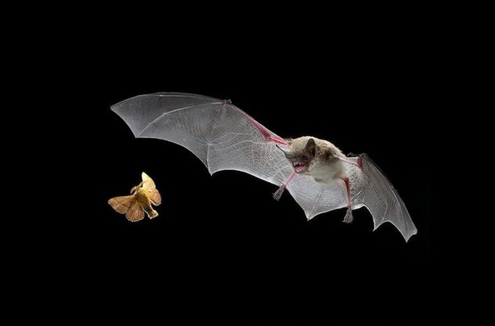
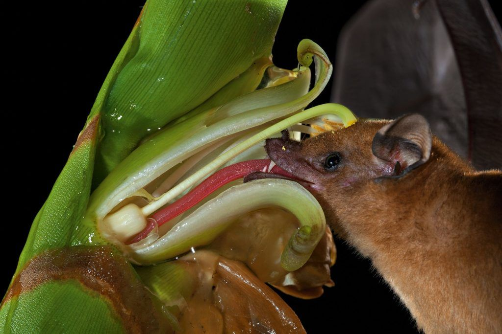
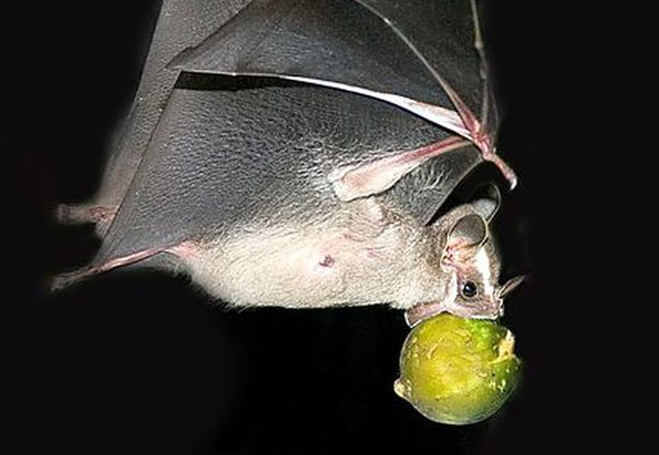
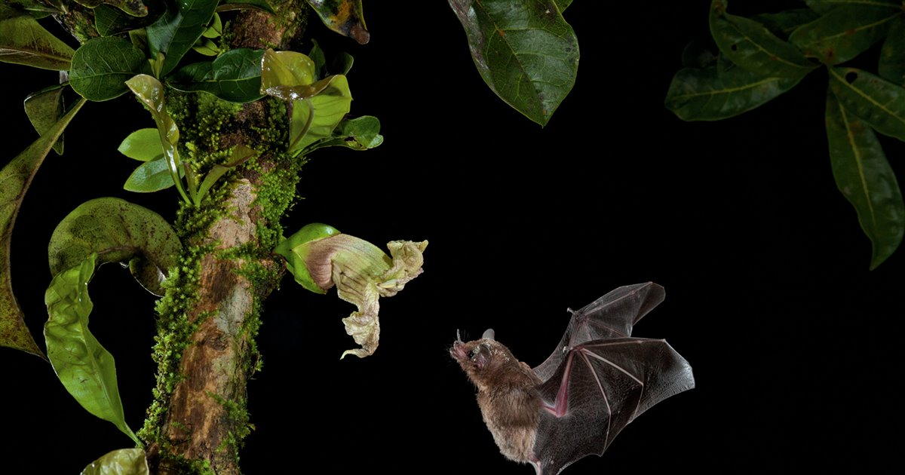
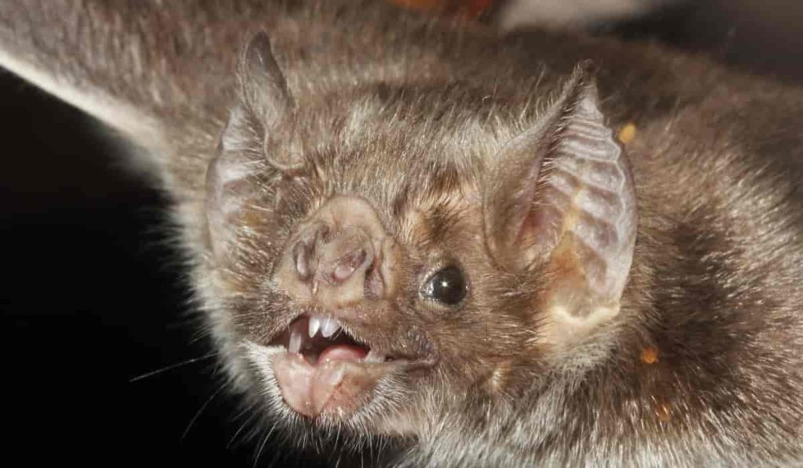
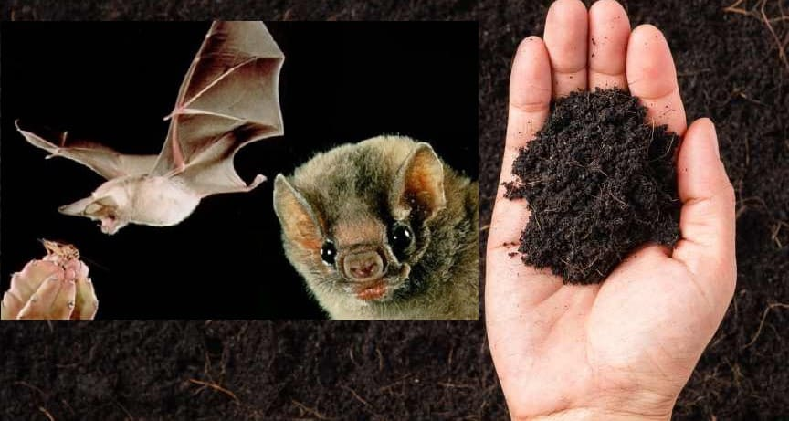

Algunas especies llegan a consumir entre 50 y 150 % de su peso corporal por noche, regulando las poblaciones de insectos en los ecosistemas tropicales. Un murciélago come en una noche 1000 insectos plagas de cultivos como el algodón, jitomate y maíz. En México y Estados Unidos, el murciélago de cola libre (Tadarida brasiliensis), se alimenta de polillas que son plagas de cultivos de maíz y algodón causando pérdidas millonarias a la agricultura.
Se ha estimado que los murciélagos son polinizadores de al menos 500 especies de 96 géneros de plantas. Polinizan planta de importancia cultural (Agave: Tequila, mezcal y pulque).
Los murciélagos son los mamíferos dispersores de semillas más importantes en los trópicos debido a su capacidad de vuelo. Se estima que en las regiones tropicales, dispersan de 2 a 8 veces más semillas que las aves. Se ha demostrado que en estaciones secas, entre el 80-100 % de las semillas que llegan al suelo en bosques de tierras bajas son depositadas por murciélagos.
Animal que es buen indicador del estado de los ecosistemas.
La saliva del murciélago Desmodus rotundus produce una enzima para evitar la coagulación de la sangre; y ha sido estudiada para producir medicamentos y combatir la trombosis y derrames cerebrales.
Se estudió la ecolocalización de los murciélagos y a partir de ello se diseñan dispositivos que emiten y reciben ondas ultrasónicas para avisar a las personas con debilidad visual de la presencia de algún obstáculo.
El guano de murciélago es rico en nitrógeno y fósforo, además de contener elementos traza (micronutrientes) y microorganismos biorremediadores (limpian toxinas), fungicidas (que combaten a los hongos) y nematocidas (que ayudan a controlar a las poblaciones de nematodos perjudiciales).
